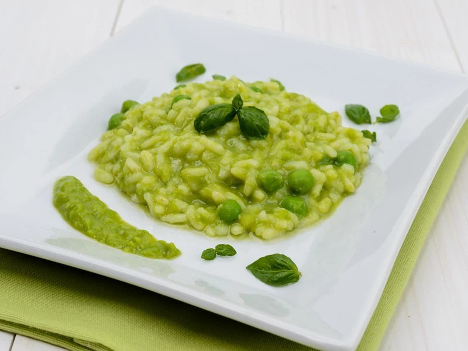
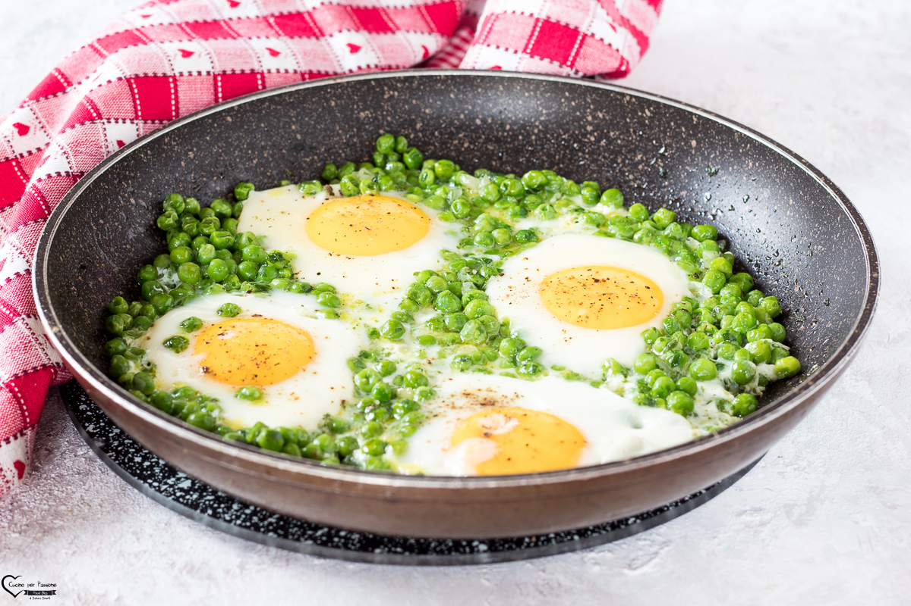

Cosa sono i piselli?
I piselli sono legumi teneri e dolci, molto apprezzati in cucina per la loro versatilità. Si possono consumare freschi, secchi o surgelati e sono ideali per contorni, risotti, minestre e piatti unici. Contengono proteine, fibre, vitamine del gruppo B e sali minerali.
Piccole sfere di un verde brillante, i piselli portano con sé il profumo della primavera e la leggerezza dei primi raccolti. Teneri e delicati, si schiudono come gemme tra le dita, regalando un sapore dolce e rassicurante. In ogni baccello si nasconde un ricordo d’infanzia, un gesto familiare, una ricetta tramandata. Versatili e amabili, sanno adattarsi a ogni piatto con semplicità, donando freschezza, colore e un tocco gentile alla tavola.
Valori nutrizionali dei piselli (per 100g cotti)
I piselli sono un alimento leggero e nutriente, adatti anche ai bambini e agli anziani.

RISOTTO AI PISELLI
Ingredienti
- 300g di piselli
- 200g di riso Arborio
- 1 cipolla piccola
- Brodo vegetale
- Olio extravergine d'oliva
- Parmigiano grattugiato
- Sale e pepe
Preparazione
Soffriggi la cipolla tritata, aggiungi i piselli e il riso. Sfuma con brodo e cuoci per circa 18 minuti. Manteca con parmigiano e servi caldo.

UOVA E PISELLI
Ingredienti
- 250g di piselli
- 2 uova
- 1 cipolla
- Olio extravergine d'oliva
- Sale e pepe
Preparazione
Cuoci i piselli con cipolla e olio. Aggiungi le uova e mescola fino a farle rapprendere. Condisci e servi come secondo piatto o contorno ricco.